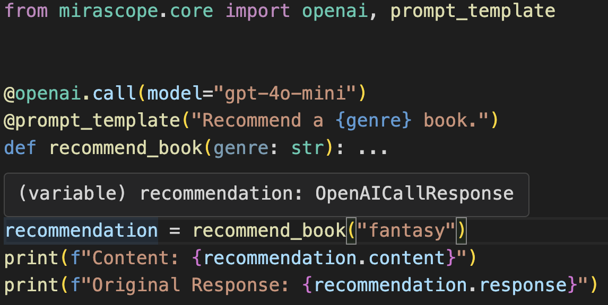

Calls¶
API Documentation
The call decorator is a core feature of the Mirascope library, designed to simplify and streamline interactions with various Large Language Model (LLM) providers. This powerful tool allows you to transform Python functions into LLM API calls with minimal boilerplate code while providing type safety and consistency across different providers.
The primary purpose of the call decorator is to:
- Abstract away the complexities of different LLM APIs
- Provide a unified interface for making LLM calls
- Enable easy switching between different LLM providers
- Enhance code readability and maintainability
By using the call decorator, you can focus on designing your prompts and handling the LLM responses, rather than dealing with the intricacies of each provider's API.
Basic Usage and Syntax¶
The basic syntax for using the call decorator is straightforward:
from mirascope.core import openai, prompt_template
@openai.call("gpt-4o-mini")
@prompt_template("Recommend a {genre} book")
def recommend_book(genre: str):
...
response = recommend_book("fantasy")
print(response.content)
In this example, we're using OpenAI's gpt-4o-mini model to generate a book recommendation for a user-specified genre. The call decorator transforms the recommend_book function into an LLM API call. The function arguments are automatically injected into the prompt defined in the @prompt_template decorator.
Function Body
In the above example, we've used an ellipsis (...) for the function body, which returns None. If you'd like, you can always explicitly return None to be extra clear. For now, you can safely ignore how we use the function body, which we cover in more detail in the documentation for dynamic configuration.
Supported Providers¶
Mirascope's call decorator supports multiple LLM providers, allowing you to easily switch between different models or compare outputs. Each provider has its own module within the Mirascope library. We currently support the following providers:
- OpenAI (and any provider with an OpenAI compatible endpoint)
- Anthropic
- Mistral
- Gemini
- Groq
- Cohere
- LiteLLM (for multi-provider support)
To use a specific provider, simply use the call decorator from the corresponding provider's module. Here's an example of how to use multiple different providers with the same function:
from mirascope.core import anthropic, mistral, openai, prompt_template
@prompt_template("Recommend a {genre} book")
def recommend_book(genre: str):
...
openai_recommendation = openai.call("gpt-4o-mini")(recommend_book)("fantasy")
print("OpenAI recommendation:", openai_recommendation.content)
anthropic_recommendation = anthropic.call("claude-3-5-sonnet-20240620")(recommend_book)("fantasy")
print("Anthropic recommendation:", anthropic_recommendation.content)
mistral_recommendation = mistral.call("mistral-large-latest")(recommend_book)("fantasy")
print("Mistral recommendation:", mistral_recommendation.content)
This flexibility allows you to compare outputs from different providers or switch between them based on your specific needs without changing your core logic.
Import Structure
We've shown importing each provider's module and using their respective call decorators. If preferred, you can instead directly import the non-aliased decorator (e.g. from mirascope.core.openai import openai_call).
Common Parameters Across Providers¶
While each LLM provider has its own specific parameters, there are several common parameters that you'll find across all providers when using the call decorator. These parameters allow you to control various aspects of the LLM call:
model: The only required parameter for all providers, which may be passed in as a standard argument (whereas all others are optional and must be provided as keyword arguments). It specifies which language model to use for the generation. Each provider has its own set of available models.stream: A boolean that determines whether the response should be streamed or returned as a complete response. We cover this in more detail in theStreamsdocumentation.tools: A list of tools that the model may request to use in its response. We cover this in more detail in theToolsdocumentation.response_model: A PydanticBaseModeltype that defines how to structure the response. We cover this in more detail in theResponse Modelsdocumentation.output_parser: A function for parsing the response output. We cover this in more detail in theOutput Parsersdocumentation.json_mode: A boolean that deterines whether to use JSON mode or not. We cover this in more detail in theJSON Modedocumentation.client: A custom client to use when making the call to the LLM. We cover this in more detail in theCustom Clientsection below.call_params: The provider-specific parameters to use when making the call to that provider's API. We cover this in more detail in theProvider-Specific Parameterssection below.
These common parameters provide a consistent way to control the behavior of LLM calls across different providers. Keep in mind that while these parameters are widely supported, there might be slight variations in how they're implemented or their exact effects across different providers (and the documentation should cover any such differences).
Provider-Specific Parameters¶
API Documentation
mirascope.core.anthropic.call_params
mirascope.core.cohere.call_params
mirascope.core.gemini.call_params
mirascope.core.groq.call_params
While Mirascope provides a consistent interface across different LLM providers, each provider has its own set of specific parameters that can be used to further configure the behavior of the model. These parameters are passed to the call decorator through the call_params argument.
For all providers, we have only included additional call parameters that are not already covered as shared arguments to the call decorator (e.g. model). We have also opted to exclude currently deprecated parameters entirely. However, since call_params is just a TypedDict, you can always include any additional keys at the expense of type errors (and potentially unknown behavior).
Here is an example using custom OpenAI call parameters to change the temperature:
from mirascope.core import openai, prompt_template
@openai.call("gpt-4o-mini", call_params={"temperature": 0.7})
@prompt_template("Recommend a {genre} book")
def recommend_book(genre: str):
...
response = recommend_book("fantasy")
print(response.content)
Custom Client¶
Mirascope allows you to use custom clients when making calls to LLM providers. This feature is particularly useful when you need to use specific client configurations, handle authentication in a custom way, or work with self-hosted models.
To use a custom client, you can pass it to the call decorator using the client parameter. Here's an example using a custom OpenAI client:
from openai import OpenAI
from mirascope.core import openai, prompt_template
# Create a custom OpenAI client
custom_client = OpenAI(
api_key="your-api-key",
organization="your-organization-id",
base_url="https://your-custom-endpoint.com/v1"
)
@openai.call(model="gpt-4o-mini", client=custom_client)
@prompt_template("Recommend a {genre} book")
def recommend_book(genre: str):
...
response = recommend_book("fantasy")
print(response.content)
Any custom client is supported so long as it has the same API as the original base client.
Handling Responses¶
API Documentation
mirascope.core.anthropic.call_response
mirascope.core.cohere.call_response
mirascope.core.gemini.call_response
mirascope.core.groq.call_response
When you make a call to an LLM using Mirascope's call decorator, the response is wrapped in a provider-specific BaseCallResponse object (e.g. OpenAICallResponse). This object provides a consistent interface for accessing the response data across different providers while still offering access to provider-specific details.
Common Response Properties and Methods¶
All BaseCallResponse objects share these common properties:
content: The main text content of the response. If no content is present, this will be the empty string.finish_reasons: A list of reasons why the generation finished (e.g., "stop", "length"). These will be typed specifically for the provider used. If no finish reasons are present, this will beNone.model: The name of the model used for generation.id: A unique identifier for the response if available. Otherwise this will beNone.usage: Information about token usage for the call if available. Otherwise this will beNone.input_tokens: The number of input tokens used if available. Otherwise this will beNone.output_tokens: The number of output tokens generated if available. Otherwise this will beNone.cost: An estimated cost of the API call if available. Otherwise this will beNone.message_param: The assistant's response formatted as a message parameter.tools: A list of provider-specific tools used in the response, if any. Otherwise this will beNone. Check out theToolsdocumentation for more details.tool: The first tool used in the response, if any. Otherwise this will beNone. Check out theToolsdocumentation for more details.metadata: Any metadata provided using the@metadatadecorator.tool_types: A list of tool types used in the call, if any. Otherwise this will beNone.prompt_template: The prompt template used for the call.fn_args: The arguments passed to the function.dynamic_config: The dynamic configuration used for the call. Check out theDynamic Configurationdocumentation for more details.messages: The list of messages sent in the request.call_params: The call parameters provided to thecalldecorator.call_kwargs: The finalized keyword arguments used to make the API call.user_message_param: The most recent user message, if any. Otherwise this will beNone.start_time: The timestamp when the call started.end_time: The timestamp when the call ended.
There are also two common methods:
__str__: Returns thecontentproperty of the response for easy printing.tool_message_params: Creates message parameters for tool call results. Check out theToolsdocumentation for more information.
Provider-Specific Response Details¶
While Mirascope provides a consistent interface, you can also always access the full, provider-specific response object if needed. This is available through the response property of the BaseCallResponse object.
# Accessing OpenAI-specific chat completion details
completion = response.response
print(f"Content: {completion.choices[0].message.content}")
Reasoning For Provider-Specific BaseCallResponse Objects
The reason that we have provider-specific response objects (e.g. OpenAICallResponse) is to provide proper type hints and safety when accessing the original response.
Error Handling¶
When making LLM calls, it's important to handle potential errors. Mirascope preserves the original error messages from providers, allowing you to catch and handle them appropriately:
from openai import OpenAIError
from mirascope.core import openai, prompt_template
@openai.call(model="gpt-4o-mini")
@prompt_template("Recommend a {genre} book")
def recommend_book(genre: str):
...
try:
response = recommend_book("fantasy")
print(response.content)
except OpenAIError as e:
print(f"Error: {str(e)}")
By catching provider-specific errors, you can implement appropriate error handling and fallback strategies in your application. You can of course always catch the base Exception instead of provider-specific exceptions.
Type Safety and Proper Hints¶
One of the primary benefits of Mirascope is the enhanced type safety and proper type hints provided by the call decorator. This feature ensures that your IDE and type checker can accurately infer the return types of your LLM calls based on the parameters you've set.
For example:
- When using a basic call, the output will be properly typed as the provider-specific call response.
- When you set a
response_model, the output will be properly typed as theResponseModelTtype of theresponse_modelyou passed in. - When streaming is enabled, the return type will reflect the stream type.
- If you use an
output_parser, the return type will match the parser's output type.
This type safety extends across all the different settings of the call decorator, providing a robust development experience and helping to catch potential type-related errors early in the development process.

In this example, your IDE will provide proper autocompletion and type checking for recommendation.content and recommendation.response, enhancing code reliability and developer productivity.
Best Practices¶
- Provider Flexibility: Design functions to be provider-agnostic, allowing easy switching between different LLM providers for comparison or fallback strategies.
- Provider-Specific Prompts: Tailor prompts to leverage unique features of specific providers when needed, using provider-specific
calldecorators. For example, Anthropic is known to handle prompts with XML particularly well. - Error Handling: Implement robust error handling to manage API failures, timeouts, or content policy violations, ensuring your application's resilience. Check out our documentation on using Tenacity for how to easily add retries to your error handling logic.
- Streaming for Long Tasks: Utilize streaming for long-running tasks or when providing real-time updates to users, improving the user experience. Check out the
Streamsdocumentation for more details. - Modular Function Design: Break down complex tasks into smaller, modular functions that can be chained together, enhancing reusability and maintainability. Check out the
Chainingdocumentation for more details. - Custom Clients: Leverage custom clients when working with self-hosted models or specific API configurations, allowing for greater flexibility in deployment scenarios. For example, you can use open-source models by serving OpenAI compatible endpoints (e.g. with
vLLM,Ollama, etc). - Structured Outputs: Use
response_modelsto ensure consistency and type safety when you need structured data from your LLM calls. Check out theResponse Modelsdocumentation for more details. - Parameterized Calls: Take advantage of
call_paramsto customoize model behavior without changing your core function logic.
Mastering the call decorator is the next step towards building robust LLM applications with Mirascope that are flexible, efficient, and adaptable to various providers and use cases.